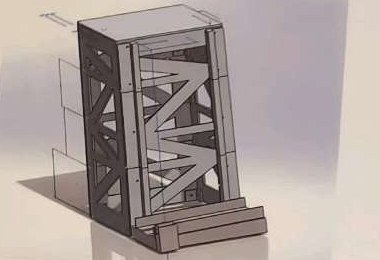
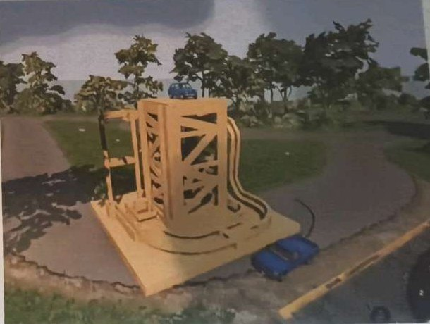
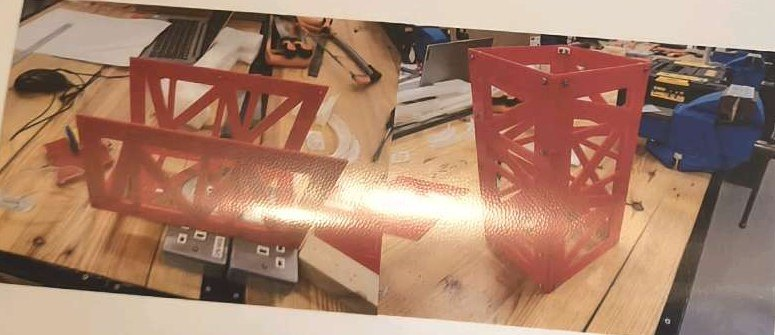
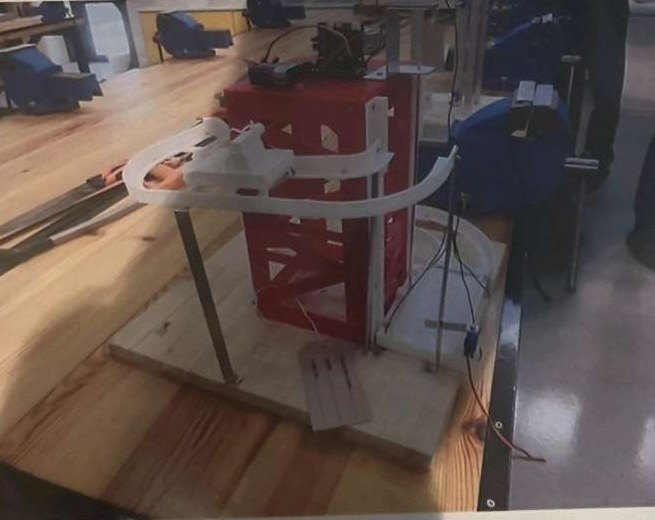
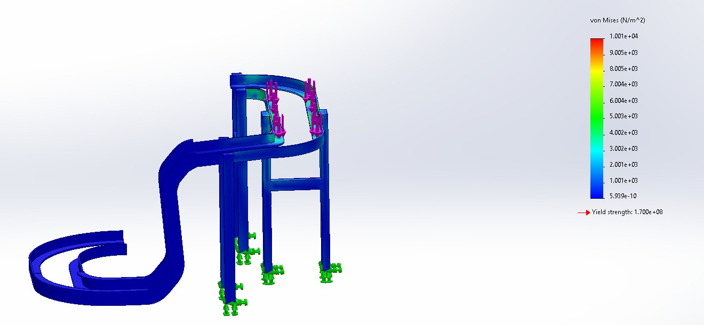

The brief
The Leaving Certificate Engineering project brief for 2024 asked for a model drop tower ride of our own design. It had to have a gondola for at least two riders with safety harnesses, a mechanism to raise the gondola to the top of the tower, and a drop release with a safe stopping device. Every working part had to be visible without taking the model apart, the longest dimension could not exceed 400 mm, and the power supply was limited to 9 V.
Design
I started by researching real drop towers and breaking the brief down into the parts the model needed: lift, release, gondola, harnesses and brake. After sketching several options for each, I compared them in a design matrix and chose a tower with a lift on one side and a curved track that carries the gondola away from the tower after the drop.
This was my first project in SolidWorks. I taught myself the software over the Halloween break from YouTube tutorials, then modelled every part of the ride and produced drawings for each one.




Manufacture
The first tower was 3D printed, but a power cut stopped the print partway through and there was no time to reprint it. I redesigned the tower as flat panels and laser cut them instead, which was faster for parts that size. The curved track and the gondola were 3D printed, and I turned the gondola’s wheels on the lathe. They came out too small, so I remade them in plastic.




Control
A micro:bit runs the ride using two servo motors and the lift motor. Button A drops the gondola: a servo swings to 41°, holds for 15 seconds and resets. Button B runs the lift motor, reversing its direction each time it restarts and showing the current direction on the LEDs. Pressing A and B together stops everything.
Simulation
Before printing the track, I ran static stress tests on it in SolidWorks Simulation. With a 5 N load on the outer edge, the first version bent too much at the unsupported curve, so I added supports underneath and tested again until the stress was low enough. I also ran a SolidWorks flow simulation of the airflow around the gondola.

Testing
I tested each mechanism repeatedly and recorded how often it worked. The friction brake and the manually closed harnesses worked every time. The micro:bit release worked about three times in four, but its bolt worked loose over time. The lift rarely worked because it jammed in its guide: I had not aligned it properly with the track. The track itself never worked through the bends, because there was no clearance underneath and the wheels came off.
What I learned
The project earned a H1, but I was critical of the result, and the lessons have stayed with me. I designed my printed parts with zero tolerance, so they did not fit; I now always leave clearance between mating parts. 3D printing took far longer than I planned, so I now plan around print time and check a design properly before printing it. I also learned that printed parts are much weaker than metal or moulded plastic, which matters when choosing how to make a part.